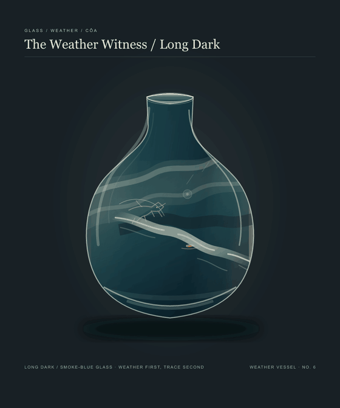

← Weather Witness galleryLong Dark
The vessel holds still. Foam crosses the buoy, then clears. One fine amber light catches on the same point; the dark waits before the water returns.

The Weather Witness / Long Dark / loopOne warm point, seen again after the foam.
Long Dark / weather carries the returnA low moving rush crosses and recedes; after it, the air stays almost still. The light has no separate note.